Thanksgiving Coloring Pages for Kids - Set 2
20 new Thanksgiving pages for ages 4-8: a turkey chef, a smiling pie slice, a gravy boat over mashed potatoes, a thankful tree with blank leaves to write on, a parade balloon, and Pip, Momo, Bun and Pom helping in the kitchen. Thick, clean outlines for little hands. Grab the free samples below, or download the whole printable PDF bundle.
Free sample pages
Print at home on US Letter or A4. No sign-up needed.
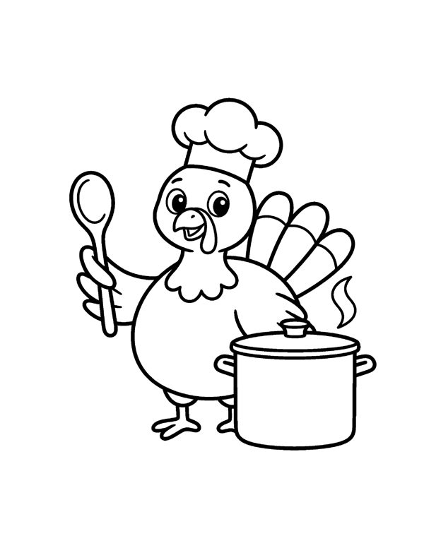
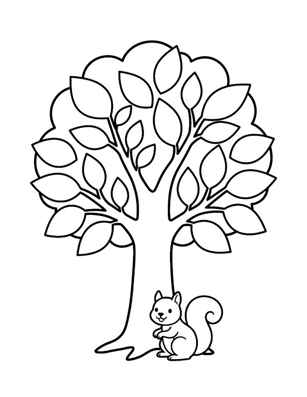
The full bundle: 20 pages
4 files: US Letter PDF, A4 PDF, a 2-up half-page PDF for parties and classrooms, and every page as a separate PNG. 300 DPI, ink-friendly clean outlines, instant download - print as many times as you like.
Preview every page
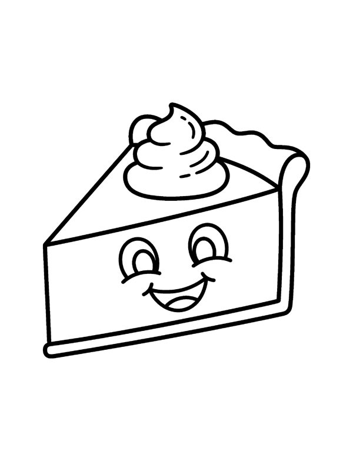
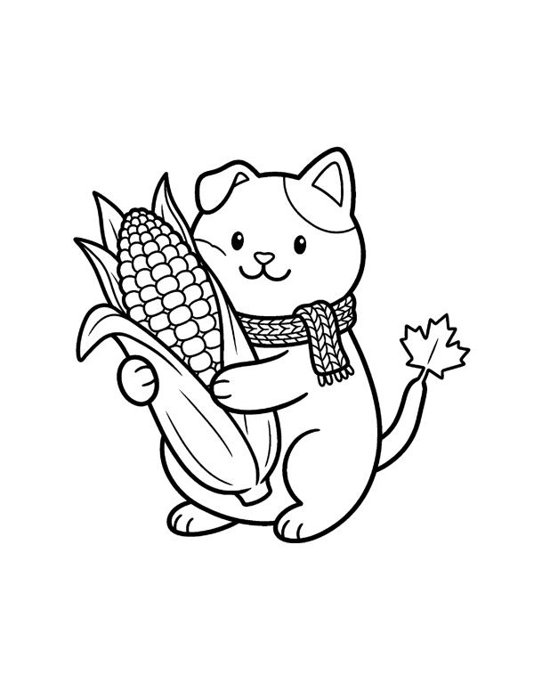
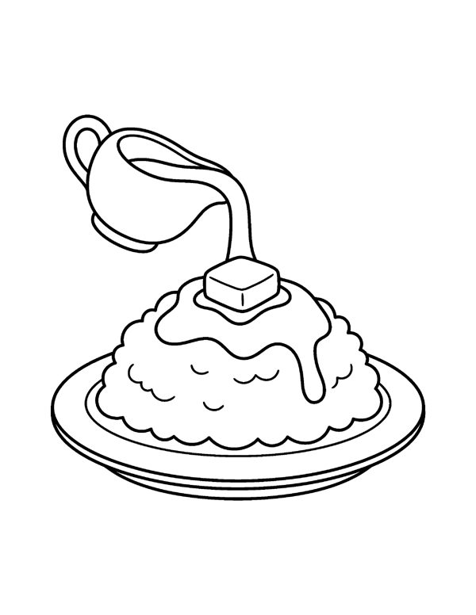
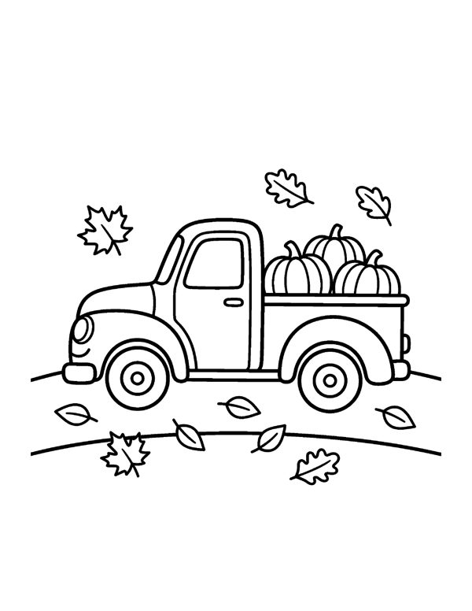
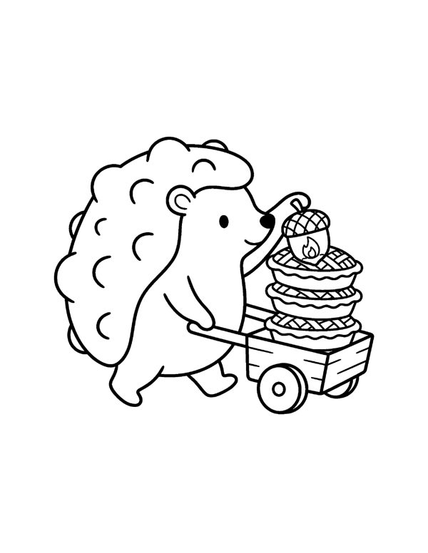
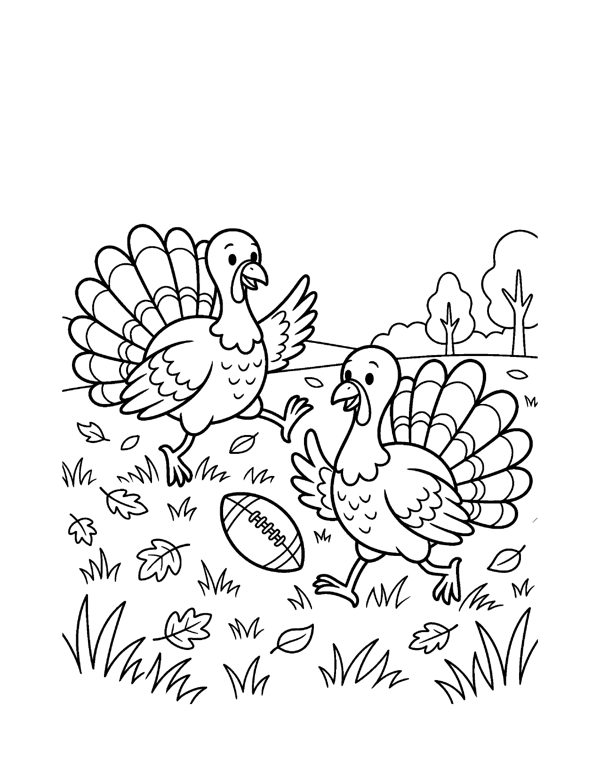
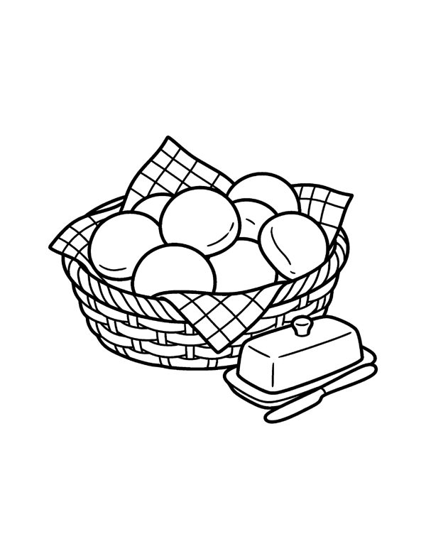
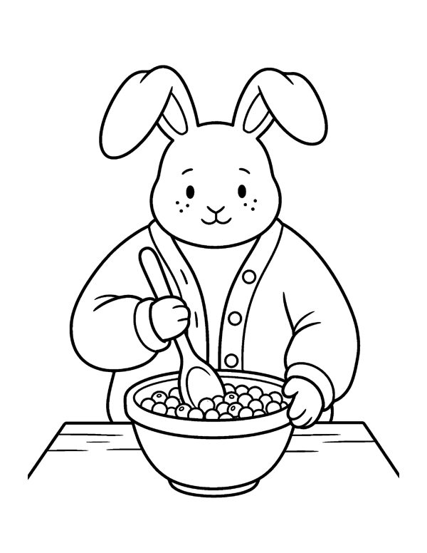
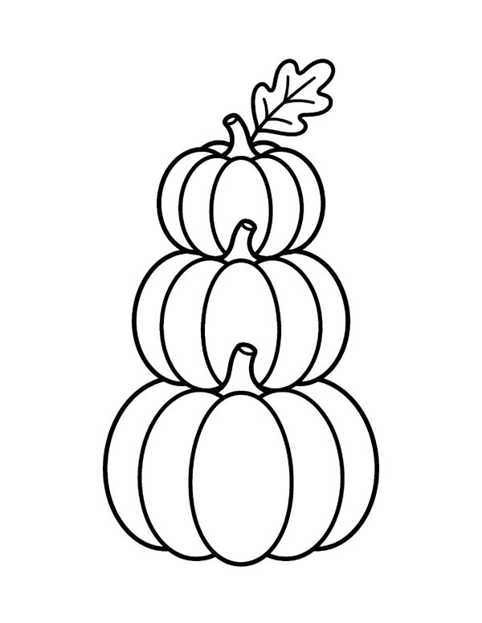
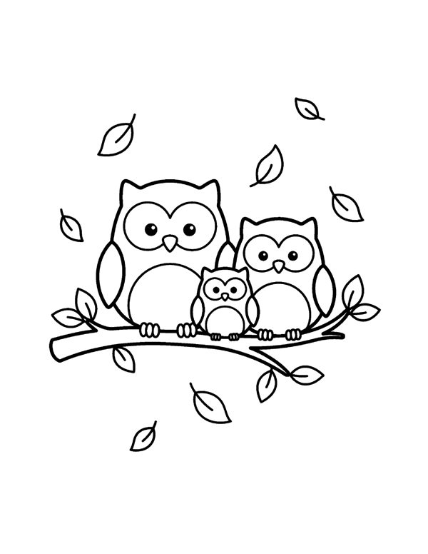
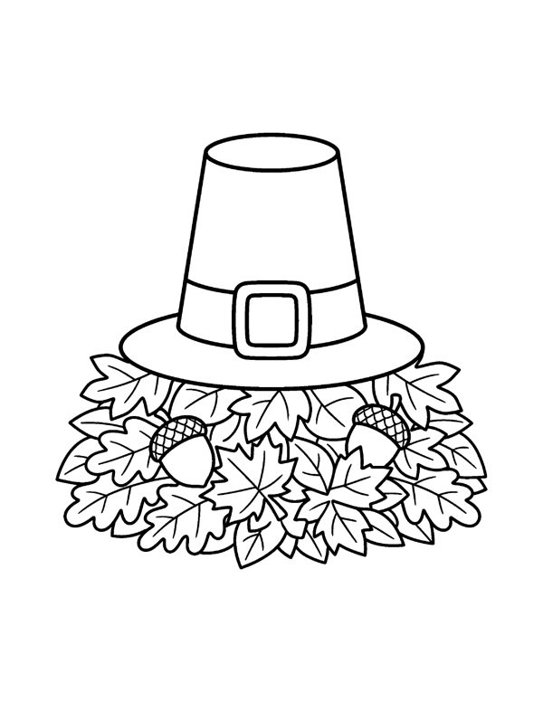
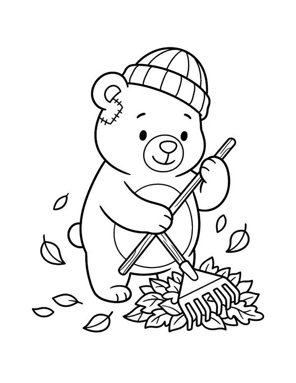
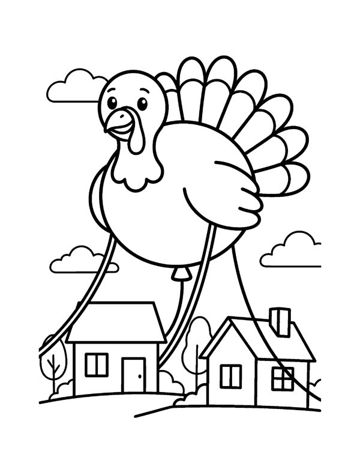
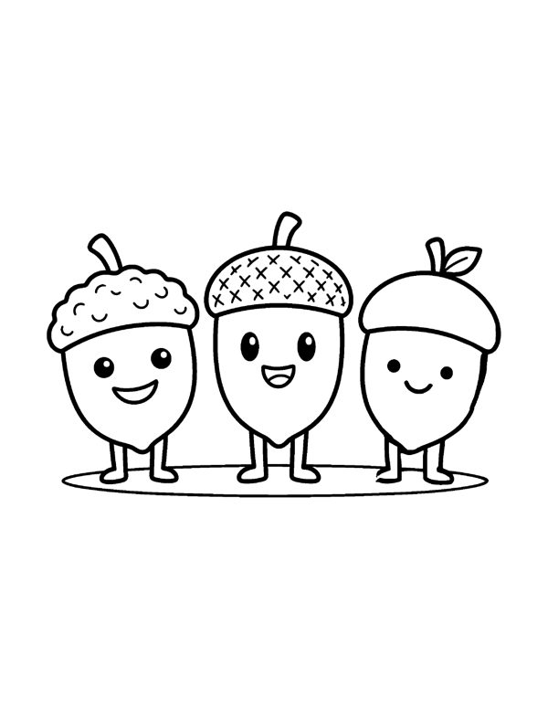
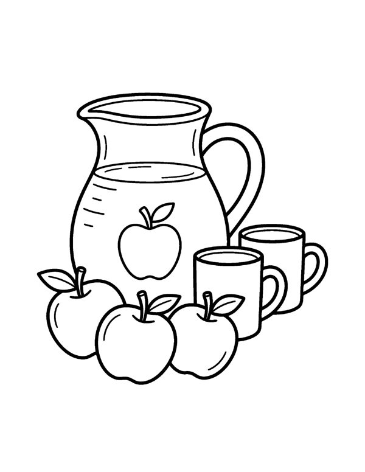
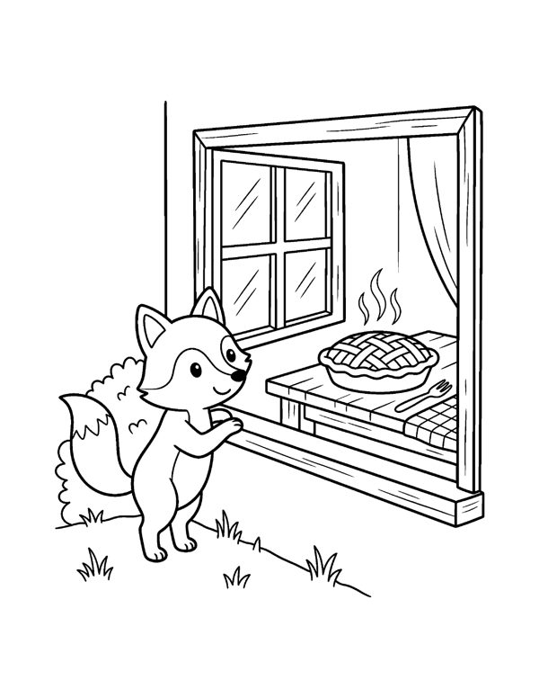
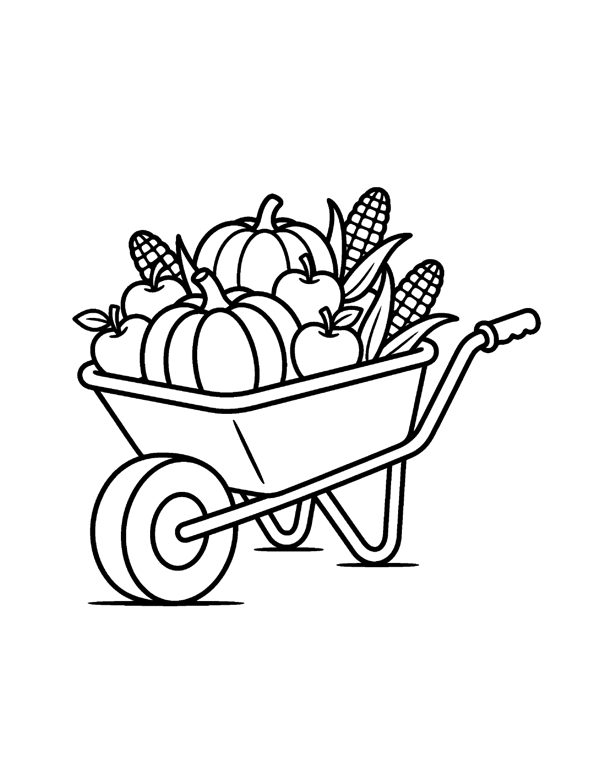
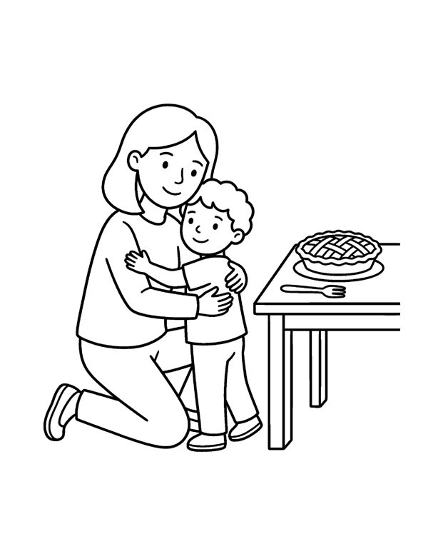